梅吉さんへのプレゼント [梅吉]
バレンタインの日も平常心の梅吉さん。
平常心どころか寝ぼけていませんか？
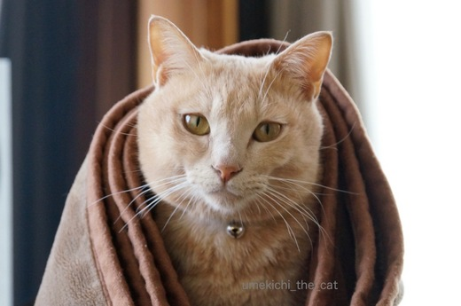
いつもどおりのあさねのねぼけがおやで。
おかーさんも職場や仕事関係の人に義理チョコを渡すなんて無毛なイベントは賛成しないけど
自分や家族間で楽しむなら良いじゃない？
それに普段は買えないようなお高いチョコレートが大手を振って買えるのよ〜。
なので、行ってきま〜すε=ε=ε=ε=ε=ε=ヾ(*ΦωΦ)ﾉ

デパートの特設会場のチョコレート売り場は子供からおばあちゃんでにぎわう「女子の巣」。
女性が自分用に買うことを想定してかゴージャズなパッケージや
ラブリーなデザインのチョコレートが目立ちましたよ。
で、手に入れたのがこちら。

焼酎ボンボンです！。for おっと。
おもてに貼ってあるシールがチョコレートの中に入っている焼酎の銘柄です。
「アサヒ」なんて九州以外ではあまり見かけない焼酎なのでは？
色々みてたら自分用のも欲しくなってきて・・・・
（最初からそのつもりだったのでは？というご意見はスルーです。笑）

わーい！パッケージ買い！！
グリーンの箱のにゃんこのうつろな目が
お風呂でふぬけになっている梅吉そっくりで買わずにはいられませんでした。
箱が空いたら梅吉のヒゲを入れるんだ〜。
このほかにも猫パッケージたくさんありました。
猫人気、チョコレートの世界にまで進出ですね。
梅吉さんには食べ物ではなく愛を込めてじゃらしを思い切り振り回してさしあげました。
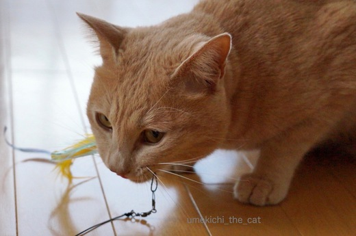
がぶ〜っ。
獲物を捕まえたおとこの顔です。笑
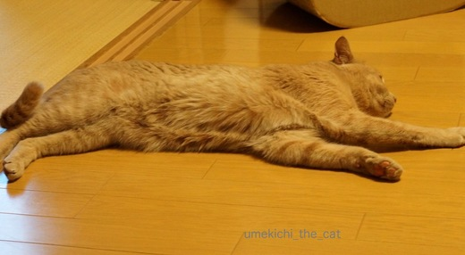
走り疲れて、休憩したいをアピール中。
皆さんへのお返事＆ご訪問ちょっと遅れています。ごめんなさい(꒦ິ⌑꒦ີ)
猫じゃない疑惑深まる [梅吉]
朝ベランダにやってくるスズメを見る梅吉さん。
（毎朝スズメに米粒を撒いてあげています）

首を思い切り伸ばしておしりをぷりぷり。
肩のあたりから上、猫じゃない違う生物みたいです。ヨーダ？
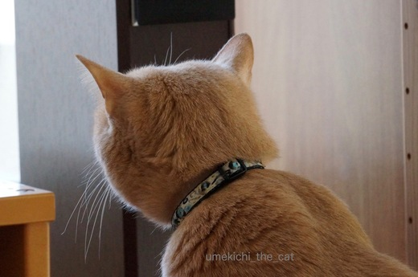
先代猫はスズメを見るとか細い声で「キャー・・・・・キャー・・・・」
先々代猫は「カカカカカッ・・・・」
梅吉は無言。
そして窓にばーんっ！と突進です。

![[猫]](https://blog.ss-blog.jp/_images_e/101.gif) みんないってしもた・・・
みんないってしもた・・・
勢いよく飛びつくからですよ。
ヨーダとか違う生物説がある梅吉さんですがわんこかもしれません。
ザ・６秒動画。
くるーり、まわっちゃいます。笑
 ↑ガブッと一押し↑
↑ガブッと一押し↑
（毎朝スズメに米粒を撒いてあげています）

首を思い切り伸ばしておしりをぷりぷり。
肩のあたりから上、猫じゃない違う生物みたいです。ヨーダ？
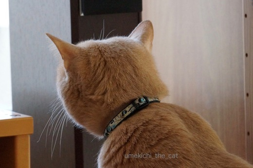
先代猫はスズメを見るとか細い声で「キャー・・・・・キャー・・・・」
先々代猫は「カカカカカッ・・・・」
梅吉は無言。
そして窓にばーんっ！と突進です。

勢いよく飛びつくからですよ。
ヨーダとか違う生物説がある梅吉さんですがわんこかもしれません。
ザ・６秒動画。
くるーり、まわっちゃいます。笑
お風呂タイム [梅吉]

湯気がもうもうと立ち込めるバスルームからお伝えします。
（お風呂用の防水カメラ、画質が悪いな〜。）
梅吉さんはお風呂でお顔を拭いてもらって１日の疲れを癒します。

「お顔、拭く？」と聞くと顔をにゅ〜っとのばしてきて
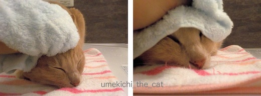

お風呂だとお耳の中もいやがりません。
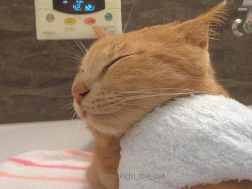
はいはい。のどのまわりも拭きましょうねー。
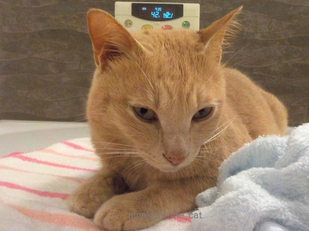
目がとろんとしてきましたよ。

気持ちよすぎてごろん。
このスキにお尻の辺りを拭こうとすると・・・
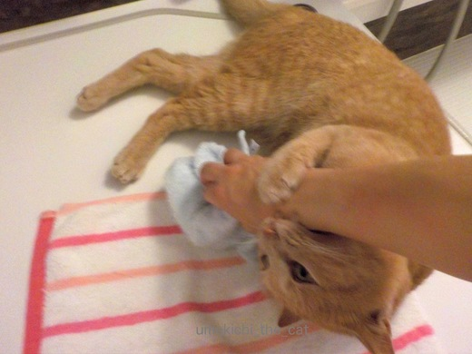
いたいです・・・・(꒦ິ⌑꒦ີ)
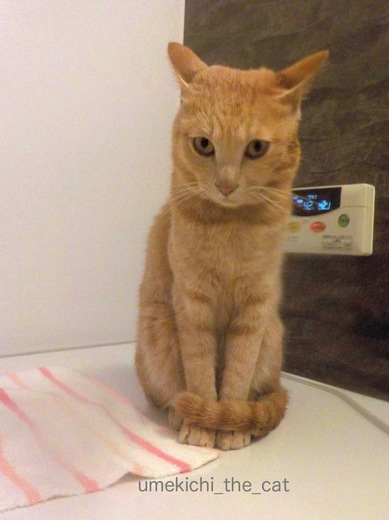
はい、最後のひと暴れでお顔に変な癖のついた梅吉さんの出来上がり！
明日も一緒にお風呂に入りましょうね。でもかじらんといてね。
おかーさんの日課 [梅吉]
梅吉さんの日課があるならおかーさんの日課もあるわけで・・・
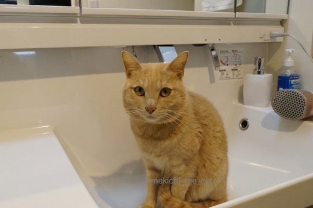
そんなところに居座っていると
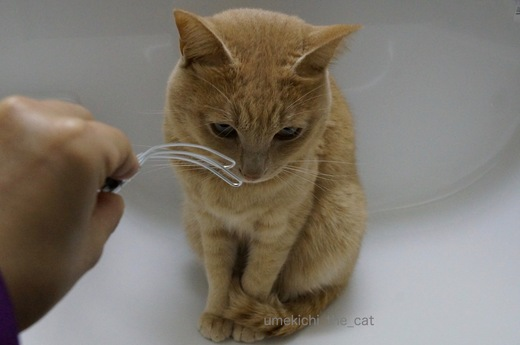
こんなことがしたくなるんですよ。うりうり〜
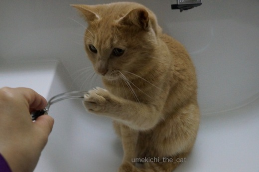
まいあさおなじことやめてんか。

ひつっこいわ〜ほんまに・・・・

ぎーーーーーっ
ああ、良いお顔ですよ(≧▽≦)
この顔を見ないと１日が始まらないかも。
このほか薬用リップクリームのニオイを嗅いで嫌な顔をするのもルーチンです。笑
今朝はその表情を撮る気満々だったのにしてくれませんでした・・・・
思い通りには行かない猫様。

こちらは期待通りに順調です。大きなリバウンドもなくただいま4550ｇ。
あと50〜100ｇは許容範囲かな。このままキープしたいです。
↑ガブッと一押し↑
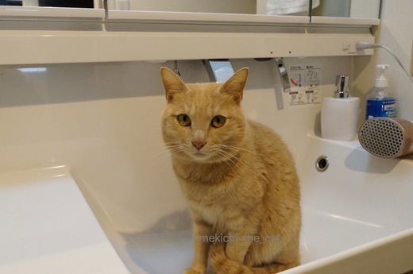
そんなところに居座っていると
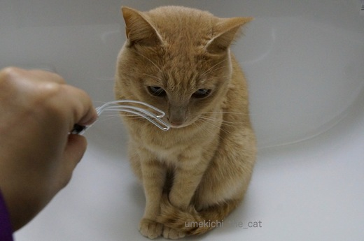
こんなことがしたくなるんですよ。うりうり〜
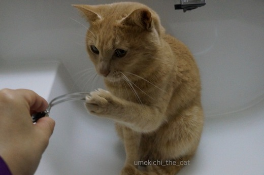


ああ、良いお顔ですよ(≧▽≦)
この顔を見ないと１日が始まらないかも。
このほか薬用リップクリームのニオイを嗅いで嫌な顔をするのもルーチンです。笑
今朝はその表情を撮る気満々だったのにしてくれませんでした・・・・
思い通りには行かない猫様。

こちらは期待通りに順調です。大きなリバウンドもなくただいま4550ｇ。
あと50〜100ｇは許容範囲かな。このままキープしたいです。
梅吉の日課 [梅吉]
朝の身支度の時間には必ず梅吉さんがお付き合い。

ドライヤーの入っていた場所に陣取る。
わしはきょういちにちここにいてるで。
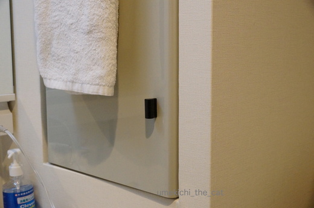
はいはい、分かりましたよ、と扉を閉めるとこの世の終わりみたいな声で鳴く・・・・
しめるなんていけずやな〜
わしびっくりや。

いけずされるからばしょかえとこか・・・
あ、ここええかんじや。
ここにしとくわ。
全くもってうれしい日課です・・・・
↑ガブッと一押し↑

ドライヤーの入っていた場所に陣取る。
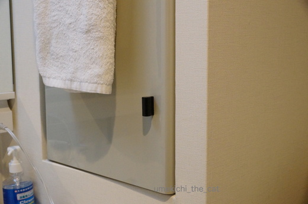
はいはい、分かりましたよ、と扉を閉めるとこの世の終わりみたいな声で鳴く・・・・
わしびっくりや。

全くもってうれしい日課です・・・・
レジ袋最高！ [梅吉]

梅吉流お作法 [梅吉]


花鳥風月 [梅吉]
いぬ用おもちゃが好きなねこ [梅吉]
梅吉さんの最近のお気に入りおもちゃ。
犬用のカミカミコットンです。きりきり噛むと歯磨き効果があると商品説明がありました。
これがええかみごごちなんや。
はもきれいになるんやで。あぐ〜
あがっっっ、と、とれへんで！
びっくりしたわ〜
おかーさんはわしがたいへんなめにあうとうれしそうなかおしよる・・・・
梅吉が思い切り噛むと「キリッ」とか「パキッパキッ」とすごい音がします。
初めは歯が折れたんじゃないかと思ったくらい。
思い切り噛むので歯が刺さり込んで慌てていることもありますが
しっかり噛んでいるんので歯石予防の効果はありそう。水洗いもできるんですよ。
この大きさなら飲み込むこともないので安心です。
それにしてもいぬ用って・・・・噛む力、ますます強くなりそうなんですけど(｣ﾟﾛﾟ)｣
↑ガブッと一押し↑
犬用のカミカミコットンです。きりきり噛むと歯磨き効果があると商品説明がありました。
梅吉が思い切り噛むと「キリッ」とか「パキッパキッ」とすごい音がします。
初めは歯が折れたんじゃないかと思ったくらい。
思い切り噛むので歯が刺さり込んで慌てていることもありますが
しっかり噛んでいるんので歯石予防の効果はありそう。水洗いもできるんですよ。
この大きさなら飲み込むこともないので安心です。
それにしてもいぬ用って・・・・噛む力、ますます強くなりそうなんですけど(｣ﾟﾛﾟ)｣
冬のおすすめエクササイズ [梅吉]
今日はベルトを使ったエクササイズを教えていただきます。
講師は梅吉先生です。よろしくおねがいしま〜す。
うめきちやで。きょうはよろしゅう。
まずはベルトを“わ”にしておおきくかじるんやで。
それから“わ”にあしをいれるいめーじで・・・・
ひねるっ！かたてはしっかりあげてや！！
先生、これはウエストに効きそうですね。

さらにいきおいよくあおむけになっておおきくかじる！！！
しっかりかじるとひょうじょうきんもきたえられるで。
先生ありがとうございました。大変参考になりました。
お顔、シュッとならはったんとちゃいます？
せやろ。
みなさんもお試しください(ΦωΦ)
連日寒い！寒すぎる〜。
昨日、一昨日はほんの一瞬ですが雪もちらつきました。
厚着しまくっているので着膨れなのか、冬太りなのかわからない・・・・
↑ガブッと一押し↑
講師は梅吉先生です。よろしくおねがいしま〜す。
先生、これはウエストに効きそうですね。

しっかりかじるとひょうじょうきんもきたえられるで。
先生ありがとうございました。大変参考になりました。
お顔、シュッとならはったんとちゃいます？
みなさんもお試しください(ΦωΦ)
連日寒い！寒すぎる〜。
昨日、一昨日はほんの一瞬ですが雪もちらつきました。
厚着しまくっているので着膨れなのか、冬太りなのかわからない・・・・

カフェオレ色の梅吉

梅吉 2023年8月10日 永眠


梅吉と出会った譲渡会

犬猫の理由なき殺処分ゼロ
妄想広告
UMEKICHI 光

爆発的に早い！
時々攻撃的！
Thanks to Mr.Boss365
爆発的に早い！
時々攻撃的！
Thanks to Mr.Boss365